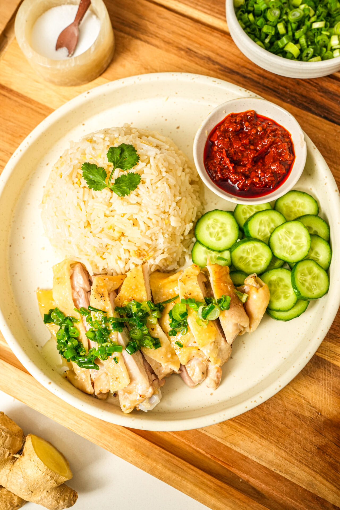

Hainanese Chicken Rice

Silky chicken, fragrant oily rice, and the ultimate ginger-chili kick.
There is no dish that defines Singaporean comfort quite like Hainanese Chicken Rice. While it looks deceptively simple, the magic lies in the technique: the gentle poaching of the bird, the shock of the ice bath to create that iconic jelly-like skin, and rice so flavorful you could eat it entirely on its own. It’s a labor of love that turns a humble chicken into a masterpiece of texture and aroma. Grab a cold drink, take your time with the sauces, and get ready for the best meal of your week.
Ingredients
- 1 whole free-range chicken (about 1.5kg / 3.3 lbs)
- 2 tbsp kosher salt (for exfoliation)
- 2 inches ginger, sliced into rounds
- 4 cloves garlic, bruised
- 2 stalks green onion, tied into a knot
- 1 large cucumber, sliced (for garnish)
- Fresh cilantro (for garnish)
- 1 tbsp sesame oil mixed with 1 tbsp light soy sauce (for glazing)
The Fragrant Rice
- 2 cups long-grain Jasmine rice, washed and drained
- 2 tbsp chicken fat (rendered from the bird) or vegetable oil
- 3 cloves garlic, finely minced
- 1 inch ginger, finely minced
- 2 pandan leaves, tied into a knot
- 2 ½ cups reserved chicken poaching broth
- ½ tsp salt
Chili Sauce
- 6 fresh long red chilies
- 3 birds eye chilies (for extra heat)
- 2 inches ginger, chopped
- 4 cloves garlic
- 2 tbsp lime juice or calamansi juice
- 2 tbsp chicken broth
- 1 tsp sugar and ½ tsp salt
Ginger & Scallion Sauce
- ¼ cup fresh ginger, finely grated
- 2 cloves garlic, finely minced
- 2 stalks green onion, finely chopped
- 3 tbsp peanut oil or vegetable oil (heated until smoking)
- ½ tsp salt
Steps to Cook
Poach the Chicken
- Rub the chicken skin all over with kosher salt to exfoliate and remove impurities. Rinse thoroughly and pat dry.
- Stuff the cavity with the sliced ginger, bruised garlic, and green onion knot.
- Place the chicken in a large pot and cover with water. Bring to a boil, then immediately reduce to a very low simmer. Cover and cook for about 40-50 minutes (until the internal temperature hits 74°C/165°F).
- Prepare a large bowl with ice and water. Once cooked, carefully lift the chicken out and submerge it in the ice bath for 10 minutes. This stops the cooking and gives the skin that silky texture.
- Remove from the ice bath, pat dry, and brush the skin with the sesame oil and soy sauce glaze. Set aside.
Cook the Fragrant Rice
- In a wok or pan, heat the chicken fat or oil. Sauté the minced garlic and ginger until fragrant but not browned.
- Add the washed rice to the pan and stir-fry for 2-3 minutes until the grains are coated and smell toasty.
- Transfer the rice to a rice cooker. Add the 2 ½ cups of reserved chicken broth, salt, and the pandan leaves. Cook as per your machine's standard setting.
Prepare the Sauces
- For the Chili: Blend the chilies, ginger, and garlic in a processor until smooth. Stir in the lime juice, broth, sugar, and salt. Adjust to your preferred tanginess.
- For the Ginger Sauce: Place the grated ginger, garlic, and scallions in a small heat-proof bowl. Carefully pour the smoking hot oil over them to "flash cook" the aromatics. Stir in salt.
Serve and Enjoy
- Carve the chicken into bite-sized pieces (traditional style is bone-in, but fillets work too).
- Fluff the rice and serve a generous portion alongside the chicken.
- Garnish with cucumber slices and cilantro. Provide individual small dipping bowls for the chili sauce, ginger sauce, and dark soy sauce.
- Serve with a side of the remaining hot broth, garnished with a few scallions.
Home